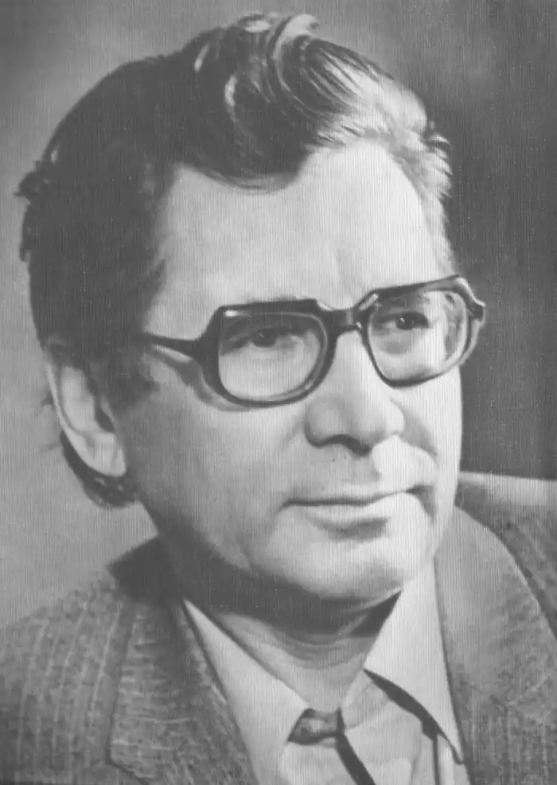

ПАВЛО ЗАГРЕБЕЛЬНИЙ
(Нар. 1924 р., помер в 2009)
Павло Архипович Загребельний народився 25 серпня 1924р. в с. Солошине на Полтавщині. 1941 року закінчено десятирічку; вчорашній випускник, ще не маючи повних сімнадцяти років, пішов добровольцем до армії. Був курсантом 2-го Київського артучилища, брав участь в обороні Києва, в серпні 1941р. був поранений. Після госпіталю знову військове училище, знову фронт, тяжке поранення в серпні 1942р., після якого — полон, і до лютого 1945р. — фашистські концтабори смерті. У 1945p. працює у радянській воєнній місії в Західній Німеччині. З 1946p. — навчається на філологічному факультеті Дніпропетровського університету. По його закінченні (1951p.) — майже півтора десятиліття журналістської роботи (в обласній дніпропетровській газеті, в журналі "Вітчизна" в Києві), поєднуваної з письменницькою працею. В другій половині 50-х років П. Загребельним видані збірки оповідань "Учитель" (1957), "Новели морського узбережжя" (1958), повісті "Марево", "Там, де співають жайворонки" (1956), "Долина довгих снів" (1957). Серйозною заявкою на письменницьку зрілість стала "Дума про невмирущого" (1957), присвячена воїнському та людському подвигу молодого радянського солдата, який загинув у фашистському концтаборі. В 1961 — 1963 pp. Загребельний працює головним редактором "Літературної газети" (пізніше — "Літературна Україна"), приблизно в той же час з'явилися три перші романи письменника: "Європа 45" (1959), "Європа. Захід" (1960), "Спека" (1960). Протягом 60 — 70-х років письменник створив більшу частину своїх романів, зокрема і найвагоміші з них: — "День для прийдешнього" (1964); — "Шепіт" (1966); — "Добрий диявол" (1967); — "Диво" (1968); — трилогію "З погляду вічності" (1970); — "Розгін" (Державна премія СРСР, 1980) — романну будову з чотирьох книг: "Айгюль", "В напрямі протоки", "Ой крикнули сірі гуси", "Персоносфера"; — "Левине серце", (продовженням "Левиного серця" став роман "Вигнання з раю" (1985)); — "Переходимо до любові" (1971); — "Намилена трава" (1974); — "Євпраксія"(1975); — "Південний комфорт" ("Вітчизна", 1984). Одним із значних здобутків української прози став роман "Диво" (1968), в якому органічно поєднується далеке минуле та сучасність. В центрі роману — Софія Київська, яка є незнищенним символом української державності та духовності. Пізніше було створено цілий цикл романів про історичне минуле нашої Батьківщини: "Первоміст" (1972), "Смерть у Києві" (1973), "Євпраксія" (1975). Подіям української історії XVI ст. присвячено роман "Роксолана" (1980). Письменник зробив спробу проникнути у складний внутрішній світ своєї героїні — Роксолани — Анастасії Лісовської, доньки українського священика з Рогатина, яка, потрапивши до гарему турецького султана Сулеймана, незабаром стала його улюбленою дружиною. Розкрити "таємниці" характеру Б. Хмельницького, показати його як людину та як визначного державотворця — таке завдання поставив перед собою П. Загребельний в романі "Я, Богдан" (1983). Він показує діяльність гетьмана на тлі складної політичної ситуації середини XVII ст., зупиняючись також і на подробицях його особистого життя. Панорамність, історіософські роздуми про долю України — такі риси найновішого роману письменника "Тисячолітній Миколай" (1994). В романах зустрічаємо вступні слова чи передмову, післяслово — це свого роду невеликі літературознавчі, а то й історіографічні етюди. Виступив П. Загребельний і з кількома п'єсами, створеними на основі романів — "Хто за? Хто проти?" ("День для прийдешнього"), "І земля скакала мені навстріч" ("З погляду вічності"); активно виступає з критичними і літературознавчими статтями в пресі, а також з доповідями, промовами й інтерв'ю. Ці виступи зібрані в книзі статей, есе і портретів "Неложними устами" (1981). До неї ввійшла повість-дослідження "Кларнети ніжності", присвячена П. Г. Тичині. За його сценаріями на Київській кіностудії ім. О. П. Довженка знято художні фільми: "Ракети не повинні злетіти" (1965), "Перевірено — мін немає" (1966), "Лаври" (1974), "Ярослав Мудрий" (1982). Павло Загребельний понад сорок років працює в українській прозі. За цей час вийшло близько двадцяти його романів. Один із них — "Розгін" відзначено Державною премією СРСР, два — "Первоміст" і "Смерть у Києві" — Державною премією УРСР ім. Т. Г. Шевченка. Твори високо оцінюються критикою, мають широке читацьке визнання, він один із найпопулярніших сьогодні українських письменників. Друковані масовими тиражами, його книги швидко розходяться; вони постійно виходять в перекладах іншими мовами; зростає і кількість видань творів письменника за рубежем.